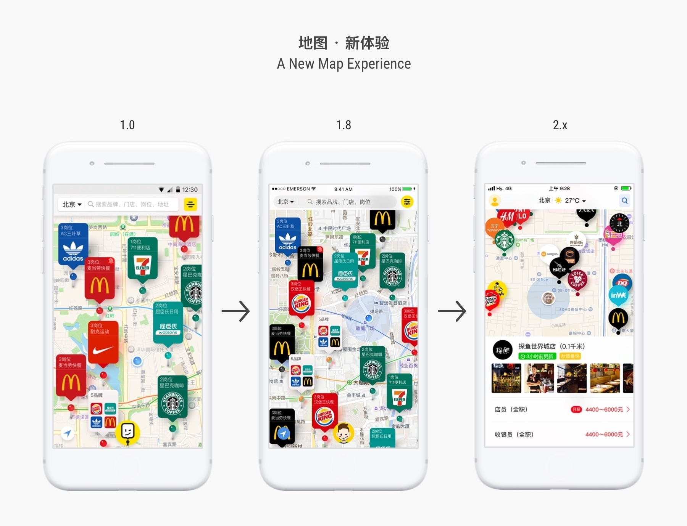

First thing first
The entire experience has been prototyped in Framer, which includes all the major and micro interactions. You can try it with the embedded demo down below, or via this link. It could take up to a minute to load. Otherwise, you can play the recorded videos at the end of this page: )
由于这次升级涉及到很多微小细节，仅仅使用静态的平面设计很难将所有信息还原出来，所以我们借用了 Framer 来进交互设计。这样我们就能够直接在手机上运行原型，进而完善每个细节。 您可以通过下面嵌入的演示直接体验（最好使用Safari浏览器），或是点击 这个链接。您也可以播放文章末尾录制好的视频进行了解 :)
A New Map Experience
地图 · 新体验
As a successor, the 2nd version brings an updated map experience. The Brand-Card’s size is shrunken so that the screen can display more “Brand-Pins”. A new Campaign Page is placed at the bottom of the screen. Scroll up to reveal more content; Drag down to hide. It doesn’t take any noticeable space at all. Besides, since looking for a job means coming out for the interview, the title bar also displays the weather information!
作为一款升级产品，捷库工作2对地图的体验进行了全面升级。首先，“品牌卡片”的尺寸得到了缩小，用以留出空间显示更多的“品牌图钉”。其次是屏幕底部的活动面板，向上滑动可以显示更多内容，向下拖动则可以隐藏。此外，由于找工作必不可以少的就是要出门面试，所以我们在地图上方增加了一块地方用于显示当前的天晴状况。

Video Demos
视频演示
When a Brand-Pin is on tap, a Preview Board will jump up from the bottom of the screen with some of the most relevant information to a job seeker, including the distance, photos of the store, opening position and salary, etc.
当用户点击“品牌图钉”时，屏幕下半部分会出现“职位预览面板”。面板上包含了求职者在快速浏览职位过程中最需要的信息，包括距离、门店照片、职位，以及薪酬，等等。
With a Preview Board open, the user can directly tap the other Brand-Pins to reveal the recruitment detail. Time saved!
用户也可以连续点击“品牌图钉”来直接浏览对应的职位信息。我们觉得这样能够节省更多时间。
When the user’s location slides beyond the screen, the Location Indicator stays and move along the closest edge, with an arrow pointing to the users location.
当用户的在地图上的位置移出屏幕范围时，定位标志会停留屏幕边缘，并沿着离求职者最近的边缘滑动。同时会弹出一个箭头，一直指向用户的方向。
More content can be displayed when the Campaign Page is dragged upward.
向上滑动活动面板可以显示更多的内容。
Drag downward to hide the Campaign Page.
向下滑动可以隐藏活动面板，来获取更多显示空间。